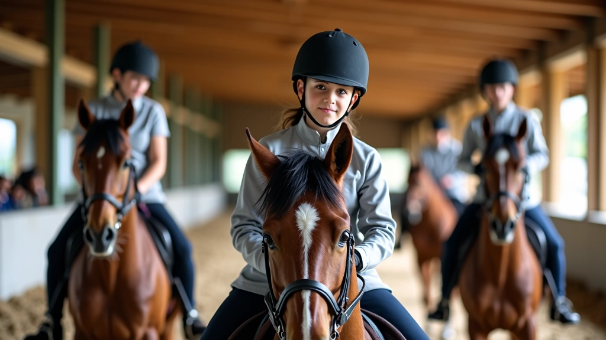
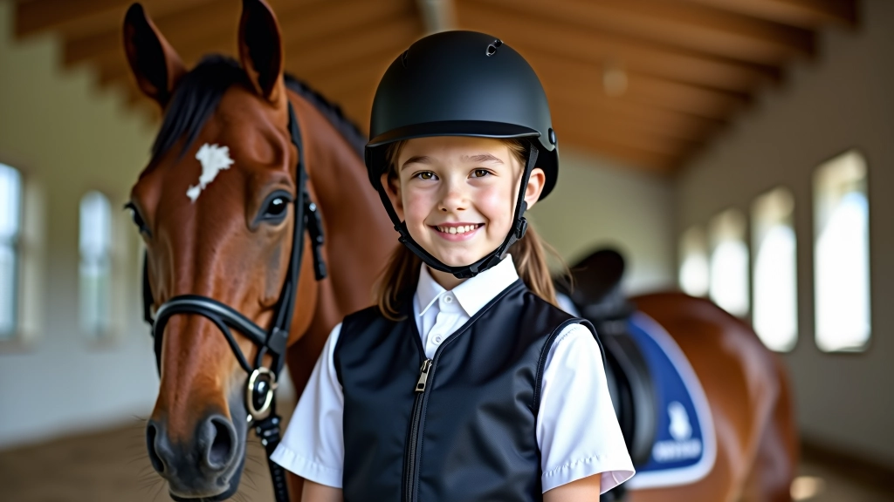
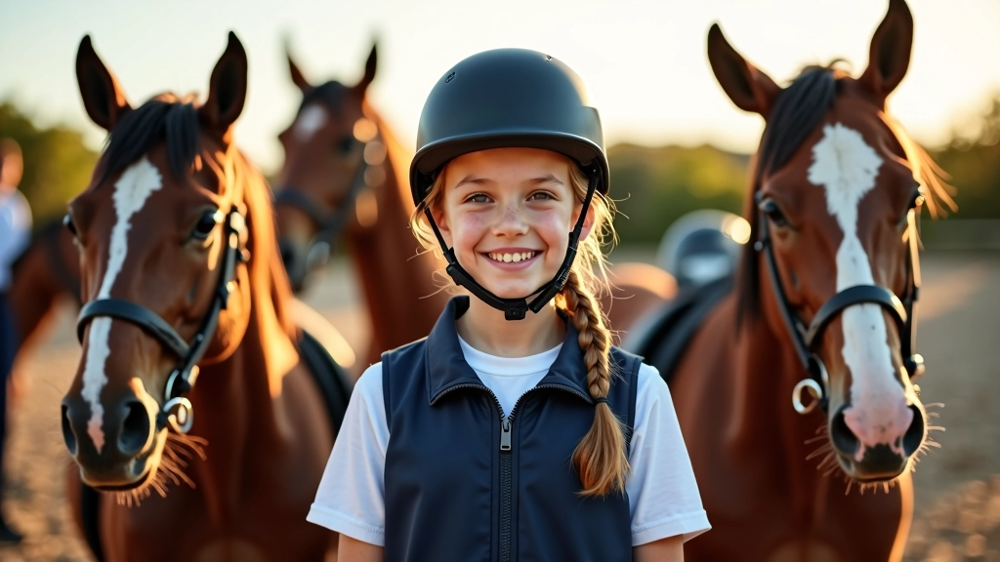

اختيار المعدات الواقية المناسبة
شرح تفصيلي لكيفية اختيار الخوذة والسترة الواقية والحذاء المناسب لممارسة الفروسية بأمان.
اكتشف القواعد الأساسية التي يجب اتباعها في حلقة التدريب لضمان سلامتك وسلامة الآخرين أثناء الممارسة

الحلقة التدريبية هي المكان الذي تبني فيه مهاراتك كفارس ناشئ. لكن قبل أن تركب الحصان وتبدأ التدريب، هناك قواعد سلامة مهمة جداً يجب أن تعرفها. نحن لا نتحدث عن تعليمات ممله — هذه قواعد فعلية تحميك وتحمي الآخرين من الإصابات. سواء كنت في يومك الأول أو بعد عدة أشهع من التدريب، فهم هذه القواعد يجعل كل جلسة تدريب أفضل وأكثر أماناً.
أول شيء يجب أن تتذكره: المعدات الواقية ليست اختيارية. الخوذة بالذات — لا تفكر حتى في دخول الحلقة بدونها. إنها تحمي رأسك من الإصابات الخطيرة، وبصراحة، الخوذة الجيدة تصنع فرقاً حقيقياً إذا حدث شيء ما.
بالإضافة إلى الخوذة، ستحتاج إلى سترة واقية وحذاء بكعب (بطول لا يقل عن 2.5 سم). السترة توفر حماية إضافية لعمودك الفقري والأضلاع. الحذاء المناسب يمنع قدمك من الانزلاق عبر الركاب — وهذا مهم جداً للسلامة. اختر معدات مناسبة لحجمك، وتأكد من أنها مريحة قبل البدء.

تفقد معدات الحماية قبل كل جلسة تدريب. تأكد من أن الخوذة آمنة، والسترة لا تحتوي على تمزقات، والحذاء نظيف وآمن. معدات سليمة = حماية أفضل.
كل حلقة تدريب لها قواعس معينة حول كيفية التحرك والمسافات بين الفرسان. قد تبدو هذه القواعد غريبة في البداية، لكنها موجودة لسبب — تمنع الحوادث والتصادمات. عندما تدخل الحلقة، يجب أن تعرف بالضبط أين تتحرك وكيف تتجنب الآخرين.
غالباً ما يكون هناك خط أو علامة توضح حدود الحلقة. لا تتجاوز هذه الحدود. كما يجب أن تحافظ على مسافة آمنة من الفرسان الآخرين — عادة ما لا تقل عن طول حصانين بينك وبينهم. إذا كنت تريد تغيير اتجاهك أو السرعة، أخبر المدرب والفرسان الآخرين بإشارة واضحة.
تأكد من أن السرج والزمام محكمان. تفقد قوائم الحصان وتأكد من عدم وجود إصابات. حصان سليم = تجربة آمنة.
لا تسرع في الحلقة. ابدأ بخطوة هادئة، ثم انتقل تدريجياً إلى السرعات الأعلى. المدرب سيخبرك متى تكون جاهزاً.
راقب الفرسان الآخرين طوال الوقت. تجنب المصادمات بالبقاء في مسارك والحفاظ على المسافة الآمنة.
المدرب موجود لحمايتك. اتبع تعليماته دائماً، وأخبره إذا كنت تشعر بعدم الارتياح أو الخوف.
التواصل الجيد يمنع الحوادث. قبل أن تقوم بأي حركة في الحلقة — سواء كان تغيير الاتجاه أو زيادة السرعة — تأكد من أن الآخرين يعرفون نيتك. ارفع يدك إذا أردت الخروج من الخط أو التوقف. استخدم كلمات واضحة مثل "خروج" أو "توقف" عند الحاجة.
كما يجب أن تستمع إلى الآخرين. إذا قال لك فارس آخر "حذر" أو "خروج"، تحرك بسرعة. هذه الكلمات تعني أنهم يريدون أن يمروا بأمان. لا تأخذ الأمر بشكل شخصي — إنهم يحاولون البقاء آمنين مثلك تماماً.
السلامة ليست عن القلق — إنها عن الثقة. عندما تعرف القواعس وتتبعها، تستطيع التركيز على ركوبك والاستمتاع بالتدريب دون قلق.

السلامة لا تنتهي عندما تنزل من الحصان. بعد التدريب مباشرة، يجب أن تنزع معدات الحماية بحذر وتفحص نفسك والحصان بحثاً عن أي إصابات. إذا شعرت بأي ألم أو شيء غير عادي، أخبر المدرب أو والديك فوراً.
تأكد أيضاً من العناية بحصانك — اشطفه، امسحه، وتأكد من أنه مرتاح. الحصان السعيد والآمن يعني تجربة تدريب أفضل للجميع. قد يبدو هذا واضحاً، لكن الكثير من الفرسان الناشئين ينسون هذه الخطوة.
قواعد السلامة في الحلقة التدريبية ليست هناك لإفساد المرح — إنها هناك لأن الفروسية رياضة حقيقية وتحتاج احترام. عندما تتعلم هذه القواعس وتتبعها، تصبح فارساً أفضل وأكثر ثقة. ستركز على مهاراتك بدلاً من القلق من الحوادث.
تذكر: كل فارس محترف بدأ كمبتدئ. بنوا مهاراتهم خطوة بخطوة، مع احترام السلامة في كل جلسة. أنت تفعل الشيء نفسه الآن. استمع إلى مدربك، ارتدِ معدات الحماية، وافهم القواعس — وستكون في الطريق الصحيح.
هذا المقال يقدم معلومات عامة حول السلامة في حلقات التدريب ولا يحل محل التعليمات المباشرة من مدربك المتخصص. كل حلقة تدريب قد يكون لديها قواعس محددة إضافية. اتبع دائماً تعليمات مدربك والقوانين المحلية للفروسية. إذا كان لديك أسئلة حول السلامة، تحدث مع والديك ومدربك مباشرة.

فريق التحرير
كتبه فريق تحرير فارس الأمان، متخصص في تقديم إرشادات عملية وموثوقة حول سلامة الفروسية للناشئين.
اكتشف المزيد من إرشادات السلامة للفرسان الناشئين
شرح تفصيلي لكيفية اختيار الخوذة والسترة الواقية والحذاء المناسب لممارسة الفروسية بأمان.
تعلم الطريقة الصحيحة للجلوس على الحصان والحفاظ على التوازن أثناء الحركة والتعامل مع الظروف المختلفة.
قواعد التعامل الآمن مع الحصان قبل وبعد الركوب وكيفية بناء ثقة متبادلة بينك وبين حصانك.